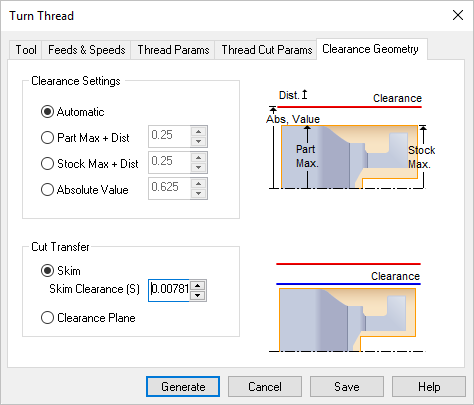

The following dialog allows you to select the appropriate Clearance Geometry for the Turn Thread operation. In this tab, Clearance Settings and Cut Transfer parameters can be specified. See Clearance Plane for additional information.
 Dialog Box: Clearance Geometry tab, Turn Thread |
Automatic The system determines the clearance height based on the part and stock geometry. Part Max + Dist Uses Part maximum plus the specified distance for clearance height. Stock Max + Dist Uses Stock maximum plus the specified distance for clearance height. If stock geometry does not exist, it would use the maximum height of the part geometry. Absolute Value Uses the specified distance for clearance height.
|
You can also control the transfer motions during cutting. When the cutter has finished cutting in one region and needs to transfer to another region to begin cutting, it can either be instructed to move to the clearance plane and then perform the transfer motion to the next cut location or it could do a skim motion. In the skim motion, the system automatically determines the safe height by taking into consideration the condition of the part model and using this Skim Clearance (S) value specified as the height to perform the transfer motions. |